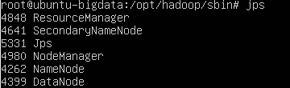

1、ubuntu22.04.5 LTS
账号密码：root/root tom/root
GUI 切命令行：ctrl+alt+F3
终端无法进入问题
locale-gen --purge
localectl set-locale LANG=en_US.UTF-8
update-locale LANG=en_US.UTF-8 LC_ALL=en_US.UTF-8
reboot
SSH服务安装
sudo apt update
sudo apt install -y openssh-server
# 设置开机自启、立刻启动
sudo systemctl enable --now ssh
# 查看状态，显示 active (running) 代表正常
systemctl status ssh
# 防火墙放行ssh（桌面版默认防火墙没开，做一遍保险）
sudo ufw allow ssh
看IP
hostname -I
ip a
192.168.0.146
允许SSH登录(不然xshell 无法登录)
nano /etc/ssh/sshd_config
加入：
PermitRootLogin yes
PermitRootLogin yes
重启ssh
systemctl restart ssh
2、JDK 安装 （所有需要安装的均在/opt/soft/）
tar -zxvf jdk8.tar.gz
mv jdk8 /opt/jdk8
3、环境变量配置 Nano ctrl+o是保存 ctrl+x退出
cd /etc/profile.d
nano hadoop.sh
顺便把hadoop的一块写了
export JAVA_HOME=/opt/jdk8
export HADOOP_HOME=/opt/hadoop
export HADOOP_CONF_DIR=$HADOOP_HOME/etc/hadoop
export PATH=$JAVA_HOME/bin:$HADOOP_HOME/bin:$HADOOP_HOME/sbin:$PATH
export HADOOP_OPTS="-Djava.library.path=$HADOOP_HOME/lib/native"
模拟shell 登陆 让他起作用
chmod +x /etc/profile.d/hadoop.sh
exec -l $SHELL
java javac命令测试是否已经起作用
4、安装hadoop
tar -zxvf hadoop-3.3.6.tar.gz -C /opt
改名字
mv hadoop-3.3.6/ hadoop/
修改hadoop 启动环境文件 /opt/hadoop/etc/hadoop/hadoop-env.sh
export HDFS_NAMENODE_USER=root
export HDFS_DATANODE_USER=root
export HDFS_SECONDARYNAMENODE_USER=root
export YARN_RESOURCEMANAGER_USER=root
export YARN_NODEMANAGER_USER=root
export JAVA_HOME=/opt/jdk8
修改core-site.xml
<configuration>
<property>
<name>fs.defaultFS</name>
<value>hdfs://localhost:9000</value> <!-- 单机或伪分布式 -->
<!-- <value>hdfs://master-node:9000</value> --> <!-- 完全分布式 -->
</property>
</configuration>
修改hdfs-site.xml
<configuration>
<property>
<name>dfs.replication</name>
<value>1</value>
</property>
<property>
<name>dfs.namenode.name.dir</name>
<value>file:///data/hadoop/name</value>
</property>
<property>
<name>dfs.datanode.data.dir</name>
<value>file:///data/hadoop/data</value>
</property>
</configuration>
修改mapred-site.xml
<configuration>
<property>
<name>mapreduce.framework.name</name>
<value>yarn</value>
</property>
</configuration>
修改yarn-site.xml
<configuration>
<property>
<name>yarn.nodemanager.aux-services</name>
<value>mapreduce_shuffle</value>
</property>
<!-- RM对外web界面监听全部网卡，允许外部浏览器访问 -->
<property>
<name>yarn.resourcemanager.webapp.address</name>
<value>0.0.0.0:8088</value>
</property>
<property>
<name>yarn.resourcemanager.hostname</name>
<value>0.0.0.0</value>
</property>
<property>
<name>yarn.nodemanager.env-whitelist</name>
<value>JAVA_HOME,HADOOP_COMMON_HOME,HADOOP_HDFS_HOME,HADOOP_CONF_DIR,CLASSPATH_PREPEND_DISTCACHE,HADOOP_YARN_HOME,HADOOP_MAPRED_HOME</value>
</property>
</configuration>
新建对应的设置的目录 /data/hadoop
mkdir -p /data/hadoop/data /data/hadoop/name
5、首次进行格式化（只执行一次，千万不要重复格式化）
hdfs namenode -format
6、启动hadoop
cd /opt/hadoop/sbin
./start-all.sh
7、验证是否已启动
jps
结果如下：

8、停止
stop-all.sh
9、常见问题
1. 命令找不到 hadoop：/etc/profile.d/hadoop.sh 没有 + x 权限，或者没有登录 shell，普通终端 source 不生效，执行exec -l $SHELL。
2. start‑all.sh 启动后 jps 看不到 datanode：多次格式化 hdfs，删除/data/hadoop/data目录再重新 format。
3. 启动时一直要输入密码：ssh 免密失败，检查~/.ssh权限，必须 700；authorized_keys 必须 600。
4. pdsh 警告：Ubuntu 默认 pdsh，不想看警告可以 export PDSH_RCMD_TYPE=ssh 加到 hadoop.sh。
10、SSH免密登录
#1.生成密钥，ssh-keygen -t rsa，三次回车！！
ssh-keygen -t rsa
#2.公钥写入信任列表
cat ~/.ssh/id_rsa.pub >> ~/.ssh/authorized_keys
#3.权限！！ssh对权限极度敏感，少这两步大概率免密失效
chmod 700 ~/.ssh
chmod 600 ~/.ssh/authorized_keys
#4.测试，不能弹密码才算成功
ssh localhost
exit
11、启动成功后webui
HDFS（文件系统）WebUI
http://192.168.0.138:9870/
YARN（资源调度、任务）WebUI
http://192.168.0.138:8088/
SecondaryNameNode 页面
http://192.168.0.138:9868/
NodeManager 单机页面
http://192.168.0.138:8042/
注意防火墙
sudo ufw allow 9870
sudo ufw allow 8088
sudo ufw allow 9868
sudo ufw allow 8042
ufw status
12、hadoop 常用指令
# 查看HDFS根目录
hdfs dfs -ls /
# 递归查看目录
hdfs dfs -ls -R /user/hive
# 创建文件夹
hdfs dfs -mkdir /test
# 递归创建多级目录
hdfs dfs -mkdir -p /user/hive/warehouse/db.db/tb
# 上传文件 本地 → HDFS
hdfs dfs -put local.txt /test/
hdfs dfs -copyFromLocal local.txt /test/
# 下载文件 HDFS → 本地
hdfs dfs -get /test/local.txt ./
hdfs dfs -copyToLocal /test/local.txt ./
# HDFS内部复制
hdfs dfs -cp /a/file /b/
# HDFS内部移动/重命名
hdfs dfs -mv /a/file /b/newfile
# 删除文件
hdfs dfs -rm /test/file.txt
# 删除文件夹（递归）
hdfs dfs -rm -r /test
# 查看文件内容
hdfs dfs -cat /test/file.txt
# 查看尾部
hdfs dfs -tail /test/file.txt
# 统计目录大小
hdfs dfs -du -h /user/hive
# 查看HDFS磁盘整体使用
hdfs dfs -df -h
Flume安装 https://flume.apache.org/
1、安装
tar -zxvf apache-flume-1.9.0-bin.tar.gz
mv apache-flume-1.9.0-bin /opt/flume
修改配置
cp flume-env.sh.template flume-env.sh
export JAVA_HOME=/opt/jdk8
环境变量 /etc/profile.d/flume.sh
export FLUME_HOME=/opt/flume
export PATH=$PATH:$FLUME_HOME/bin
加载
source /etc/profile.d/flume.sh
验证
flume-ng version
2、 写 Agent 配置文件（核心）
# agent名称 a2
a2.sources = s1
a2.channels = ch1
a2.sinks = k1
# ========= Source 监控 /opt/data/trave.log =========
a2.sources.s1.type = TAILDIR
# 记录读取偏移量的元数据文件，记录读到文件哪个位置，重启不重复消费
a2.sources.s1.positionFile = /opt/flume/taildir_position/trave.json
# 监控的文件组 可以使用空格 f1 f2
a2.sources.s1.filegroups = f1
# f1对应的真实日志路径
a2.sources.s1.filegroups.f1 = /opt/data/trave.log
# 跳过inode，单文件采集打开
a2.sources.s1.fileHeader = true
a2.sources.s1.skipTailInode = true
# ========= Channel 内存通道 =========
a2.channels.ch1.type = memory
a2.channels.ch1.capacity = 10000
a2.channels.ch1.transactionCapacity = 1000
# ========= Sink 输出到HDFS =========
a2.sinks.k1.type = hdfs
# hdfs输出路径
a2.sinks.k1.hdfs.path = hdfs://localhost:9000/flume/trave_log/%Y%m%d
# 文件前缀
a2.sinks.k1.hdfs.filePrefix = trave
# 文件类型，DataStream不压缩原始文本
a2.sinks.k1.hdfs.fileType = DataStream
# 滚动策略：时间，文件大小，事件数，满足其一就生成新文件
a2.sinks.k1.hdfs.rollInterval = 300
a2.sinks.k1.hdfs.rollSize = 134217728
a2.sinks.k1.hdfs.rollCount = 0
# 不开启hdfs批量分区权限问题
a2.sinks.k1.hdfs.useLocalTimeStamp = true
# 绑定source channel sink
a2.sources.s1.channels = ch1
a2.sinks.k1.channel = ch1
a1.sources=s1
a1.sinks = k1
a1.channels = c1
a1.sources.s1.type = spooldir
a1.sources.s1.spoolDir = /opt/log
a1.sources.s1.fileSuffix = .COMPLETED
a1.sinks.k1.type = hdfs
a1.sinks.k1.hdfs.path = /neuedu/log/%Y%m%d
a1.sinks.k1.hdfs.fileType = DataStream
a1.sinks.k1.hdfs.filePrefix = tra
a1.sinks.k1.hdfs.fileSuffix = .csv
a1.sinks.k1.hdfs.writeFormat = Text
a1.sinks.k1.hdfs.rollInterval = 60
a1.sinks.k1.hdfs.rollSize = 134217728
a1.sinks.k1.hdfs.rollCount = 0
a1.sinks.k1.hdfs.useLocalTimeStamp = true
a1.channels.c1.type = memory
a1.channels.c1.capacity = 1000
a1.channels.c1.transactionCapacity = 100
a1.sources.s1.channels = c1
a1.sinks.k1.channel = c1
执行命令
flume-ng agent -n a1 -c conf -f file-hdfs.conf
原始数据
评论@点赞@景区名@用户名@属地@总评分@景色分@趣味分@性价比分
#导入只有JAVA清洗数据
1、创建maven项目
#maven
<properties>
<maven.compiler.target>1.8</maven.compiler.target>
<maven.compiler.source>1.8</maven.compiler.source>
</properties>
<dependencies>
<dependency>
<groupId>org.apache.hadoop</groupId>
<artifactId>hadoop-common</artifactId>
<version>3.3.5</version>
</dependency>
<dependency>
<groupId>org.apache.hadoop</groupId>
<artifactId>hadoop-client</artifactId>
<version>3.3.5</version>
</dependency>
<dependency>
<groupId>org.apache.hadoop</groupId>
<artifactId>hadoop-hdfs</artifactId>
<version>3.3.5</version>
</dependency>
</dependencies>
<build>
<plugins>
<!-- maven编译插件 -->
<plugin>
<groupId>org.apache.maven.plugins</groupId>
<artifactId>maven-compiler-plugin</artifactId>
<version>3.8.1</version>
<configuration>
<source>1.8</source>
<target>1.8</target>
<encoding>UTF-8</encoding>
</configuration>
</plugin>
</plugins>
</build>
2、编写清洗代码
DataTransferMapper.java
/**
* LongWritable, Text 是输入的KV， key 是该行在文件中的字节偏移量（行号偏移） value 一行文本内容
* Text, NullWritable 是输出的KV, key 本代码把清洗完成的整行字符串放到 key `NullWritable`代表 Hadoop 里面的空占位对象，**不写实际数据**。
*/
public class DataTransferMapper extends Mapper<LongWritable, Text, Text, NullWritable> {
Text outKey = new Text();
NullWritable outValue = NullWritable.get();
@Override
protected void map(LongWritable key, Text value, Mapper<LongWritable, Text, Text, NullWritable>.Context context) throws IOException, InterruptedException {
// 读取一行 数据
String line = value.toString();
if ("".equalsIgnoreCase(line)) {
return;
}
if (line.endsWith("@"))
{
line+="0";
}
// 按照@ 进行分割
String[] tokens = line.split("@");
// 不健全的信息不处理
if (tokens.length!=9)
{
return;
}
// StringBuilder sb1 = new StringBuilder();
// for (int i=0;i<tokens.length;i++)
// {
// sb1.append(tokens[i]);
// sb1.append("@");
// }
// 评论
String comment = getString(tokens[0]);
// 点赞
String likecount = getString(tokens[1]);
// 景区名称
String sceneryName = getString(tokens[2]);
// 用户名
String username = getString(tokens[3]);
// 属地
String userLocation = getString(tokens[4]);
// 总评分
String totalRate=getString(tokens[5]);
// 景点评分
String sceneryRate=getString(tokens[6]);
// 趣味性评分
String funRate=getString(tokens[7]);
// 性价比评分
String feeRate=getString(tokens[8]);
StringBuilder sb = new StringBuilder();
sb.append(comment);
sb.append("@");
sb.append(likecount);
sb.append("@");
sb.append(sceneryName);
sb.append("@");
sb.append(username);
sb.append("@");
sb.append(userLocation);
sb.append("@");
sb.append(totalRate);
sb.append("@");
sb.append(sceneryRate);
sb.append("@");
sb.append(funRate);
sb.append("@");
sb.append(feeRate);
outKey.set(sb.toString());
context.write(outKey, NullWritable.get());
}
private String getString(String word){
if (word==null||word.isEmpty())
{
return "0";
}
return word;
}
}
DataTransferReducer.java
/**
* Text, NullWritable 刚刚的key value
*
* Map → Shuffle → Reduce。
*/
public class DataTransferReducer extends Reducer<Text, NullWritable, Text, NullWritable> {
@Override
protected void reduce(Text key, Iterable<NullWritable> values, Reducer<Text, NullWritable, Text, NullWritable>.Context context) throws IOException, InterruptedException {
context.write(key, NullWritable.get());
}
}
DataTransfer.java
public class DataTransfer {
public static void main(String[] args) throws Exception {
// 配置 Hadoop连接
Configuration configuration = new Configuration();
configuration.set("fs.defaultFS", "hdfs://localhost:9000");
// 获取文件系统
FileSystem fs = FileSystem.get(configuration);
// 获取作业实例
Job job=Job.getInstance(configuration);
job.setJarByClass(DataTransfer.class);
//设置输入输出格式：按文本行读取输入，输出也是文本文件。
job.setInputFormatClass(TextInputFormat.class);
job.setOutputFormatClass(TextOutputFormat.class);
//设置 job 文件源 路径 和 目标路径
Path srcPath = new Path("/neuedu/log/20260822/");
Path dstPath = new Path("/neuedu/raw/");
// 先给他删除
fs.delete(dstPath, true);
// 将输入输出路径绑定到 Job 任务。
FileInputFormat.setInputPaths(job, srcPath);
FileOutputFormat.setOutputPath(job, dstPath);
job.setMapperClass(DataTransferMapper.class);
job.setMapOutputKeyClass(Text.class);
job.setMapOutputValueClass(NullWritable.class);
job.setReducerClass(DataTransferReducer.class);
job.setOutputKeyClass(Text.class);
job.setOutputValueClass(NullWritable.class);
//> 提交任务，阻塞等待 MR 执行完成；true 代表打印任务运行日志。
job.waitForCompletion(true);
System.out.println("-----job over---");
}
3、打包成JAR
maven lifecycle clean+ package
4、ftp传递到hadoop /opt/soft下
5、查看 源hdfs 目录是否存在
hdfs dfs -ls /neuedu/log/20260822
6、执行jar
hadoop jar bigdata-demo1-1.0-SNAPSHOT.jar com.diecolor.DataTransfer
Mysql安装
推荐在线安装：
apt install mysql-server -y
离线安装（不推荐）
#1.解压bundle包
tar -xvf mysql-server_8.0.35-1ubuntu22.04_amd64.deb-bundle.tar
#2.按顺序dpkg安装解压出来的所有deb包
sudo dpkg -i mysql-common_*.deb
sudo dpkg -i mysql-community-client-plugins_*.deb
sudo dpkg -i mysql-community-client-core_*.deb
sudo dpkg -i mysql-community-client_*.deb
sudo dpkg -i mysql-community-server-core_*.deb
sudo dpkg -i mysql-community-server_*.deb
sudo dpkg -i mysql-server_*.deb
如果出现依赖缺失报错，离线环境需要把依赖 deb 也准备好；在线环境执行 sudo apt -f install
查看状态
systemctl status mysql
# 手动启动mysql
sudo systemctl start mysql
# 手动关闭mysql
sudo systemctl stop mysql
# 重启（改完配置之后常用）
sudo systemctl restart mysql
# 查看运行状态
sudo systemctl status mysql
# 设置开机自动启动（开机就跑mysql）
sudo systemctl enable mysql
# 取消开机自启（开机不自动启动）
sudo systemctl disable mysql
修改mysql密码
mysql
ALTER USER 'root'@'%' IDENTIFIED WITH caching_sha2_password BY 'root';
FLUSH PRIVILEGES;
exit;
（选）修改为可以远程连接
nano /etc/mysql/mysql.conf.d/mysqld.cnf
bind-address = 0.0.0.0
ctrl+o保存 ctrl+x退出
CREATE USER 'root'@'%' IDENTIFIED WITH mysql_native_password BY 'root';
GRANT ALL PRIVILEGES ON *.* TO 'root'@'%' WITH GRANT OPTION;
FLUSH PRIVILEGES;
Hive 安装
1、解压安装
#解压
tar -zxvf /opt/soft/apache-hive-3.1.3-bin.tar.gz -C /opt/
#改名字
mv apache-hive-3.1.3-bin/ hive
2、复制mysql驱动到lib
cp /opt/soft/mysql-connector-java-8.0.30.jar /opt/hive/lib/
3、配置hadoop 的路径
#根据模板 创建环境文件/opt/hive/conf
cp hive-env.sh.template hive-env.sh
编写文件
HADOOP_HOME=/opt/hadoop
4、添加环境变量 在目录/etc/profile.d/hive.sh
#!/bin/bash
export HIVE_HOME=/opt/hive
export PATH=$PATH:$HIVE_HOME/bin:$HIVE_HOME/sbin
可以选择注销或者 如下
chmod +x /etc/profile.d/hive.sh
source /etc/profile.d/hive.sh
验证
echo $HIVE_HOME
hive --version
5、修改hive-site.xml配置（还是在hive/conf/） 主要是mysql的登录
cp hive-default.xml.template hive-site.xml
把冗余的全部删掉，只保留数据库连接的内容
<?xml version="1.0" encoding="UTF-8" standalone="no"?>
<?xml-stylesheet type="text/xsl" href="configuration.xsl"?>
<configuration>
<property>
<name>javax.jdo.option.ConnectionURL</name>
<value>jdbc:mysql://127.0.0.1:3306/hive?useSSL=false&characterEncoding=UTF-8&serverTimezone=Asia/Shanghai&createDatabaseIfNotExist=true&allowPublicKeyRetrieval=true</value>
</property>
<property>
<name>javax.jdo.option.ConnectionDriverName</name>
<value>com.mysql.cj.jdbc.Driver</value>
</property>
<property>
<name>javax.jdo.option.ConnectionUserName</name>
<value>root</value>
</property>
<property>
<name>javax.jdo.option.ConnectionPassword</name>
<value>root</value>
</property>
<property>
<name>hive.metastore.db.type</name>
<value>mysql</value>
</property>
</configuration>
6、初始化数据库
schematool -dbType mysql -initSchema
7、show database; use hive ; show tables;显示
9、hive 指令是用于连接 hive的指令 quit; 退出指令
在里面跟mysql一样 用sql 查看
create database test;
show databases;
use test;
create teable t_student(id int,stuname varchar(100));
插入 会很慢 他执行的是hadoop mapreduce 分布式指令


10、加载本地文件到 表里
load data local inpath '/data/xxx.cvs' into table TABLE_NAME;
11、启动服务
启动前需要 修改hive-site.xml 测试环境去掉模拟root
<property>
<name>hive.server2.enable.doAs</name>
<value>false</value>
</property>
# 1.元数据服务
hive --service metastore &
# 2.hiveserver2 （DBeaver连接靠它，启动慢，要等30‑60秒）
hive --service hiveserver2 &
JPS 后能看到多了2个 RunJar
12、使用DBeaver 连接

jdbc:hive2://192.168.0.138:10000
13、创建库、创建表
#
create database traveldb;
use traveldb;
#external 外部表 ODS 层原始数据几乎都用外部表
create external table IF NOT EXISTS ods_traveldata(
commentcontent string,
likecount bigint,
scenicareaname string,
username string,
userlocation string,
totalrating decimal(10,1),
sceneryrating decimal(10,1),
funrating decimal(10,1),
costeffectivenessrating decimal(10,1)
)
ROW FORMAT DELIMITED FIELDS TERMINATED BY '@'
LOCATION '/warehouse/traveldb/ods/ods_traveldata';
数据流方向：ODS → DWD → DWS → ADS
Operational Data Store 原始数据层
Data Warehouse Detail 明细数据层 （ 做清洗、去脏、去空、格式标准化、维度关联，保留最细粒度明细）
Data Warehouse Summary 汇总层 （基于 DWD 明细，按主题预先聚合统计）
Application Data Store 应用层 （面向具体业务报表、BI 大屏、业务查询，做最后的个性化加工）
14、导入数据 ods原始数据
load data inpath '/neuedu/raw/' overwrite into table traveldb.ods_traveldata;
15、验证
select * from ods_traveldata ot ;
轻度汇总前 分词代码
package com.diecolor.udf;
import com.huaban.analysis.jieba.JiebaSegmenter;
import org.apache.hadoop.hive.ql.exec.UDFArgumentException;
import org.apache.hadoop.hive.ql.metadata.HiveException;
import org.apache.hadoop.hive.ql.udf.generic.GenericUDF;
import org.apache.hadoop.hive.serde2.objectinspector.ObjectInspector;
import org.apache.hadoop.hive.serde2.objectinspector.PrimitiveObjectInspector;
import org.apache.hadoop.hive.serde2.objectinspector.primitive.PrimitiveObjectInspectorFactory;
import java.util.List;
public class CommentFenci extends GenericUDF {
@Override
public ObjectInspector initialize(ObjectInspector[] arguments) throws UDFArgumentException {
if (arguments.length != 1)
{
throw new UDFArgumentException("CommentFenci takes one argument");
}else {
ObjectInspector oi = arguments[0];
if(!ObjectInspector.Category.PRIMITIVE.equals(oi.getCategory())){
throw new UDFArgumentException("CommentFenci takes only primitive types");
}
else{
PrimitiveObjectInspector poi = (PrimitiveObjectInspector) oi;
if (!poi.getPrimitiveCategory().equals(PrimitiveObjectInspector.PrimitiveCategory.STRING))
{
throw new UDFArgumentException("CommentFenci takes only string types");
}
else {
return PrimitiveObjectInspectorFactory.javaStringObjectInspector;
}
}
}
}
@Override
public Object evaluate(DeferredObject[] arguments) throws HiveException {
DeferredObject deferredObject = arguments[0];
Object comment = deferredObject.get();
if (comment == null){
return "";
}
else{
// 剔除不是中文和数字的
String str=comment.toString().replaceAll("[^\\u4E00-\\u9FA5\\d]","");
if (str.isEmpty())
{
return "";
}
else {
JiebaSegmenter segmenter = new JiebaSegmenter();
List<String> sentences=segmenter.sentenceProcess(str);
StringBuilder sb=new StringBuilder();
for (String sentence : sentences) {
sb.append(sentence).append(",");
}
return sb.length()>0?sb.toString().substring(0, sb.length()-1):"";
}
}
}
@Override
public String getDisplayString(String[] children) {
return "";
}
}
#注意pom.xml打包的问题
<?xml version="1.0" encoding="UTF-8"?>
<project xmlns="http://maven.apache.org/POM/4.0.0"
xmlns:xsi="http://www.w3.org/2001/XMLSchema-instance"
xsi:schemaLocation="http://maven.apache.org/POM/4.0.0 http://maven.apache.org/xsd/maven-4.0.0.xsd">
<modelVersion>4.0.0</modelVersion>
<groupId>com.diecolor</groupId>
<artifactId>bigdata-demo1</artifactId>
<version>1.0-SNAPSHOT</version>
<properties>
<maven.compiler.source>8</maven.compiler.source>
<maven.compiler.target>8</maven.compiler.target>
<project.build.sourceEncoding>UTF-8</project.build.sourceEncoding>
<hive.version>3.1.3</hive.version>
</properties>
<dependencies>
<dependency>
<groupId>org.apache.hadoop</groupId>
<artifactId>hadoop-common</artifactId>
<version>3.3.6</version>
</dependency>
<dependency>
<groupId>org.apache.hadoop</groupId>
<artifactId>hadoop-client</artifactId>
<version>3.3.6</version>
</dependency>
<dependency>
<groupId>org.apache.hadoop</groupId>
<artifactId>hadoop-hdfs</artifactId>
<version>3.3.6</version>
</dependency>
<!-- Hive Core -->
<dependency>
<groupId>org.apache.hive</groupId>
<artifactId>hive-exec</artifactId>
<version>${hive.version}</version>
<scope>provided</scope>
</dependency>
<!-- Jieba中文分词 -->
<dependency>
<groupId>com.huaban</groupId>
<artifactId>jieba-analysis</artifactId>
<version>1.0.2</version>
</dependency>
</dependencies>
<build>
<plugins>
<!-- maven编译插件 -->
<plugin>
<groupId>org.apache.maven.plugins</groupId>
<artifactId>maven-compiler-plugin</artifactId>
<version>3.8.1</version>
<configuration>
<source>1.8</source>
<target>1.8</target>
<encoding>UTF-8</encoding>
</configuration>
</plugin>
<plugin>
<groupId>org.apache.maven.plugins</groupId>
<artifactId>maven-shade-plugin</artifactId>
<version>3.5.1</version>
<executions>
<execution>
<phase>package</phase>
<goals>
<goal>shade</goal>
</goals>
</execution>
</executions>
</plugin>
</plugins>
</build>
</project>
16、dws 轻度汇总
1、dws层：数据轻度汇总 （数据汇总层）
（1）以景区为维度进行轻度汇总
-- 统计以下数据
-- 不同景区的评论数量
-- 不同景区的点赞数量
-- 不同景区的景色、趣味性、性价比评分的好评率
create external table IF NOT EXISTS dws_scenicarea_data(
scenicareaname string,
commentcount bigint,
sumlikecount bigint,
scenerypositiverate decimal(10,2),
funpositiverate decimal(10,2),
costeffectivenesspositiverate decimal(10,2)
) ROW FORMAT DELIMITED FIELDS TERMINATED BY '\t'
LOCATION '/warehouse/traveldb/dws/dws_scenicarea_data';
insert overwrite table dws_scenicarea_data
select
REGEXP_REPLACE(scenicareaname, '[a-zA-Z0-9]', '') scenicareaname,
count(*) commentcount,
sum(likecount) sumlikecount,
round((sum(if(sceneryrating >= 4,1,0)) / count(*)) * 100,2) scenerypositiverate,
round((sum(if(funrating >= 4,1,0)) / count(*)) * 100,2) funpositiverate,
round((sum(if(costeffectivenessrating >= 4,1,0)) / count(*)) * 100,2) costeffectivenesspositiverate
from ods_traveldata
where scenicareaname is not null and likecount is not null
group by REGEXP_REPLACE(scenicareaname, '[a-zA-Z0-9]', '');
select * from dws_scenicarea_data;
（2）以景区等级分组进行轻度汇总
-- 统计以下数据
-- 不同等级景区的数量
create external table IF NOT EXISTS dws_scenicareagrade_data(
scenicareagrade string,
count bigint
) ROW FORMAT DELIMITED FIELDS TERMINATED BY '\t'
LOCATION '/warehouse/traveldb/dws/dws_scenicareagrade_data';
insert overwrite table dws_scenicareagrade_data
select
REGEXP_REPLACE(scenicareaname, '[^a-zA-Z0-9]', '') scenicareagrade,
count(*) count
from ods_traveldata
where scenicareaname is not null and REGEXP_REPLACE(scenicareaname, '[^a-zA-Z0-9]', '') != '' and REGEXP_REPLACE(scenicareaname, '[^a-zA-Z0-9]', '') rlike '[0-9]A'
group by REGEXP_REPLACE(scenicareaname, '[^a-zA-Z0-9]', '');
select * from dws_scenicareagrade_data;
（3）以评分层次分组进行轻度汇总
-- 统计以下数据
-- 不同总评分层次的评论人数（按照用户名去重）
create external table IF NOT EXISTS dws_totalrating_data(
totalrating bigint,
count bigint
) ROW FORMAT DELIMITED FIELDS TERMINATED BY '\t'
LOCATION '/warehouse/traveldb/dws/dws_totalrating_data';
insert overwrite table dws_totalrating_data
select
tmp.totalrating,
count(tmp.username) count
from
(
select
FLOOR(totalrating) totalrating,
username
from ods_traveldata
where totalrating is not null
group by totalrating,username
) tmp
group by tmp.totalrating;
select * from dws_totalrating_data;
（4）以用户属地分组进行轻度汇总
-- 统计以下数据
-- 不同用户属地的评论人数（按照用户名去重）分布
create external table IF NOT EXISTS dws_userlocation_data(
userlocation string,
count bigint
) ROW FORMAT DELIMITED FIELDS TERMINATED BY '\t'
LOCATION '/warehouse/traveldb/dws/dws_userlocation_data';
insert overwrite table dws_userlocation_data
select
tmp.userlocation,
count(tmp.username) count
from
(
select
userlocation,
username
from ods_traveldata
where userlocation is not null
group by userlocation,username
) tmp
group by tmp.userlocation;
select * from dws_userlocation_data;
（5）对评论内容进行分词（使用jieba中文分词器），并以分好的词进行分组统计数量
（5-1）需要先使用java代码写好udf函数并打包，上传到虚拟机
CommentFenciUDF.jar
（5-2）先把jar上传到hdfs上面
hadoop fs -mkdir /traveljars
hadoop fs -put /opt/soft/bigdata-demo1-1.0-SNAPSHOT.jar /traveljars
（5-3）hive客户端执行
add jar hdfs://localhost:9000/traveljars/bigdata-demo1-1.0-SNAPSHOT.jar;
list jars;
（5-4）注册UDF并创建分词函数
DROP FUNCTION traveldb.commentFenci;
create function traveldb.commentFenci as 'com.diecolor.udf.CommentFenci';
select traveldb.commentFenci('北京是中国的首都');
（5-5）把评论内容传进去进行分词，返回的是一个字符串（代码中是分好词后以逗号进行分隔）
create external table IF NOT EXISTS tmp_fencistring(
commentfenciString string
) ROW FORMAT DELIMITED FIELDS TERMINATED BY '\t'
LOCATION '/warehouse/traveldb/tmp/tmp_fencistring';
insert overwrite table tmp_fencistring
select
traveldb.commentFenci(commentcontent) commentfenciString
from ods_traveldata
where commentcontent is not null and commentcontent != '' and length(commentcontent) != 0;
select * from tmp_fenciString limit 20;
（5-6）最后再分词统计
create external table IF NOT EXISTS dws_comment_fencicount(
word string,
count bigint
) ROW FORMAT DELIMITED FIELDS TERMINATED BY '\t'
LOCATION '/warehouse/traveldb/dws/dws_comment_fencicount';
insert overwrite table dws_comment_fencicount
SELECT
word,
COUNT(*) AS count
FROM
(SELECT explode(split(commentfenciString,',')) AS word FROM tmp_fencistring WHERE commentfenciString IS NOT NULL AND commentfenciString != '' AND length(commentfenciString) != 0
) AS temp
GROUP BY word;
select * from dws_comment_fencicount where length(word) != 1 order by count desc limit 100;
ads层：数据应用层
（1）不同景区的评论数量
create external table IF NOT EXISTS ads_scenicareaname_commentcount(
scenicareaname string,
commentcount bigint
) ROW FORMAT DELIMITED FIELDS TERMINATED BY '\t'
LOCATION '/warehouse/traveldb/ads/ads_scenicareaname_commentcount';
insert overwrite table ads_scenicareaname_commentcount
select
scenicareaname,
commentcount
from dws_scenicarea_data
order by commentcount desc;
select * from ads_scenicareaname_commentcount
（2）不同景区的点赞数量
create external table IF NOT EXISTS ads_scenicareaname_sumlikecount(
scenicareaname string,
sumlikecount bigint
) ROW FORMAT DELIMITED FIELDS TERMINATED BY '\t'
LOCATION '/warehouse/traveldb/ads/ads_scenicareaname_sumlikecount';
insert overwrite table ads_scenicareaname_sumlikecount
select
scenicareaname,
sumlikecount
from dws_scenicarea_data
order by sumlikecount desc;
select * from ads_scenicareaname_sumlikecount;
（3）不同等级景区的数量
create external table IF NOT EXISTS ads_scenicareagrade_count(
scenicareagrade string,
count bigint
) ROW FORMAT DELIMITED FIELDS TERMINATED BY '\t'
LOCATION '/warehouse/traveldb/ads/ads_scenicareagrade_count';
insert overwrite table ads_scenicareagrade_count
select
scenicareagrade,
count
from dws_scenicareagrade_data
order by count desc;
select * from ads_scenicareagrade_count;
（4）不同总评分层次的评论人数
create external table IF NOT EXISTS ads_totalrating_count(
totalrating bigint,
count bigint
) ROW FORMAT DELIMITED FIELDS TERMINATED BY '\t'
LOCATION '/warehouse/traveldb/ads/ads_totalrating_count';
insert overwrite table ads_totalrating_count
select
totalrating,
count
from dws_totalrating_data
order by totalrating;
select * from ads_totalrating_count;
（5）不同用户属地的评论人数分布
create external table IF NOT EXISTS ads_userlocation_count(
userlocation string,
count bigint
) ROW FORMAT DELIMITED FIELDS TERMINATED BY '\t'
LOCATION '/warehouse/traveldb/ads/ads_userlocation_count';
insert overwrite table ads_userlocation_count
select
userlocation,
count
from dws_userlocation_data
where count > 1
order by count desc;
select * from ads_userlocation_count;
（6）不同景区的景色、趣味性、性价比评分的好评率
create external table IF NOT EXISTS ads_scenicareaname_positiverate(
scenicareaname string,
scenerypositiverate decimal(10,2),
funpositiverate decimal(10,2),
costeffectivenesspositiverate decimal(10,2)
) ROW FORMAT DELIMITED FIELDS TERMINATED BY '\t'
LOCATION '/warehouse/traveldb/ads/ads_scenicareaname_positiverate';
insert overwrite table ads_scenicareaname_positiverate
select
scenicareaname,
scenerypositiverate,
funpositiverate,
costeffectivenesspositiverate
from dws_scenicarea_data;
select * from ads_scenicareaname_positiverate;
（7）评论词云图
create external table IF NOT EXISTS ads_comment_wordcount(
word string,
count bigint
) ROW FORMAT DELIMITED FIELDS TERMINATED BY '\t'
LOCATION '/warehouse/traveldb/ads/ads_comment_wordcount';
insert overwrite table ads_comment_wordcount
select
word,
count
from dws_comment_fencicount
where length(word) != 1
order by count desc;
select * from ads_comment_wordcount limit 100;
# 将HIVE中创建的数据 通过sqoop拉取到MYSQL
1、先在mysql创建库 建表
-- create database traveldb;
-- （1）不同景区的评论数量
create table ads_scenicareaname_commentcount(
scenicareaname varchar(100),
commentcount bigint
);
-- （2）不同景区的点赞数量
create table ads_scenicareaname_sumlikecount(
scenicareaname varchar(100),
sumlikecount bigint
);
-- （3）不同等级景区的数量
create table ads_scenicareagrade_count(
scenicareagrade varchar(100),
count bigint
);
-- （4）不同总评分层次的评论人数
create table ads_totalrating_count(
totalrating bigint,
count bigint
);
-- （5）不同用户属地的评论人数分布
create table ads_userlocation_count(
userlocation varchar(100),
count bigint
);
-- （6）不同景区的景色、趣味性、性价比评分的好评率
create table ads_scenicareaname_positiverate(
scenicareaname varchar(100),
scenerypositiverate decimal(10,2),
funpositiverate decimal(10,2),
costeffectivenesspositiverate decimal(10,2)
);
-- （7）评论词云图
create table ads_comment_wordcount(
word varchar(100),
count bigint
);
2、安装sqoop
# 解压改名
tar -zxvf sqoop-1.4.7.bin__hadoop-2.6.0.tar.gz -C /opt/
mv sqoop-1.4.7.bin__hadoop-2.6.0 sqoop
#环境变量 etc\profile.d
export SQOOP_HOME=/opt/sqoop
export PATH=$PATH:$SQOOP_HOME/bin
#修改sqoop配置
cd /opt/sqoop/conf
# 复制模板生成真正配置文件
cp sqoop-env-template.sh sqoop-env.sh
export HADOOP_COMMON_HOME=/opt/hadoop
export HADOOP_MAPRED_HOME=/opt/hadoop
# hive路径（sqoop导入hive需要）
export HIVE_HOME=/opt/hive
#上传mysql驱动到sqoop/lib
#测试
sqoop list-databases --connect jdbc:mysql://127.0.0.1:3306?useSSL=false --username root --password root

如果报错 记得传递 commons-lang-2.6.jar到sqoop/lib. hadoop3.x把这个jar给删除了，
#使用命令导出到mysql
/opt/sqoop/bin/sqoop export \
--connect "jdbc:mysql://localhost:3306/traveldb?useUnicode=true&characterEncoding=utf-8" \
--username root \
--password root \
--table ads_scenicareaname_commentcount \
--num-mappers 1 \
--export-dir /warehouse/traveldb/ads/ads_scenicareaname_commentcount \
--input-fields-terminated-by "\t" \
--input-null-string '\\N' \
--input-null-non-string '\\N';
ads_scenicareaname_sumlikecount
ads_scenicareagrade_count
ads_totalrating_count
ads_userlocation_count
ads_scenicareaname_positiverate
ads_comment_wordcount
SPRINGBOOT+MYBATIS+ECHARTS
1、新建Springboot项目 maven如下
<?xml version="1.0" encoding="UTF-8"?>
<project xmlns="http://maven.apache.org/POM/4.0.0" xmlns:xsi="http://www.w3.org/2001/XMLSchema-instance"
xsi:schemaLocation="http://maven.apache.org/POM/4.0.0 https://maven.apache.org/xsd/maven-4.0.0.xsd">
<modelVersion>4.0.0</modelVersion>
<parent>
<groupId>org.springframework.boot</groupId>
<artifactId>spring-boot-starter-parent</artifactId>
<version>4.1.1</version>
<relativePath/> <!-- lookup parent from repository -->
</parent>
<groupId>com.diecolor</groupId>
<artifactId>demo-bigdata</artifactId>
<version>0.0.1-SNAPSHOT</version>
<packaging>war</packaging>
<name>demo-bigdata</name>
<description>demo-bigdata</description>
<properties>
<java.version>17</java.version>
</properties>
<dependencies>
<dependency>
<groupId>org.springframework.boot</groupId>
<artifactId>spring-boot-starter-thymeleaf</artifactId>
</dependency>
<dependency>
<groupId>org.mybatis.generator</groupId>
<artifactId>mybatis-generator-core</artifactId>
<version>2.0.0</version>
<scope>compile</scope>
</dependency>
<dependency>
<groupId>org.mybatis.spring.boot</groupId>
<artifactId>mybatis-spring-boot-starter</artifactId>
<version>4.1.0</version>
<scope>compile</scope>
</dependency>
<dependency>
<groupId>org.springframework.boot</groupId>
<artifactId>spring-boot-starter-webmvc</artifactId>
</dependency>
<dependency>
<groupId>org.springframework.boot</groupId>
<artifactId>spring-boot-devtools</artifactId>
<scope>runtime</scope>
<optional>true</optional>
</dependency>
<dependency>
<groupId>com.mysql</groupId>
<artifactId>mysql-connector-j</artifactId>
<scope>runtime</scope>
</dependency>
<dependency>
<groupId>org.projectlombok</groupId>
<artifactId>lombok</artifactId>
<optional>true</optional>
</dependency>
<dependency>
<groupId>org.springframework.boot</groupId>
<artifactId>spring-boot-starter-tomcat</artifactId>
<scope>provided</scope>
</dependency>
<dependency>
<groupId>org.springframework.boot</groupId>
<artifactId>spring-boot-starter-webmvc-test</artifactId>
<scope>test</scope>
</dependency>
</dependencies>
<build>
<plugins>
<plugin>
<groupId>org.springframework.boot</groupId>
<artifactId>spring-boot-maven-plugin</artifactId>
</plugin>
<plugin>
<groupId>org.apache.maven.plugins</groupId>
<artifactId>maven-compiler-plugin</artifactId>
<executions>
<execution>
<id>default-compile</id>
<phase>compile</phase>
<goals>
<goal>compile</goal>
</goals>
<configuration>
<annotationProcessorPaths>
<path>
<groupId>org.projectlombok</groupId>
<artifactId>lombok</artifactId>
</path>
</annotationProcessorPaths>
</configuration>
</execution>
<execution>
<id>default-testCompile</id>
<phase>test-compile</phase>
<goals>
<goal>testCompile</goal>
</goals>
<configuration>
<annotationProcessorPaths>
<path>
<groupId>org.projectlombok</groupId>
<artifactId>lombok</artifactId>
</path>
</annotationProcessorPaths>
</configuration>
</execution>
</executions>
</plugin>
<plugin>
<groupId>org.mybatis.generator</groupId>
<artifactId>mybatis-generator-maven-plugin</artifactId>
<version>2.0.0</version>
<executions>
<execution>
<id>Generate MyBatis Artifacts</id>
<goals>
<goal>generate</goal>
</goals>
</execution>
</executions>
<dependencies>
<dependency>
<groupId>com.mysql</groupId>
<artifactId>mysql-connector-j</artifactId>
<version>9.7.0</version>
</dependency>
</dependencies>
</plugin>
</plugins>
</build>
</project>
2、mybatis generator官网：https://mybatis.org/generator/quickstart.html
generatorConfig.xml 配置如下
<?xml version="1.0" encoding="UTF-8"?>
<!DOCTYPE generatorConfiguration
PUBLIC "-//mybatis.org//DTD MyBatis Generator Configuration 1.0//EN"
"https://mybatis.org/dtd/mybatis-generator-config_1_0.dtd">
<generatorConfiguration>
<!-- 手动指明 数据库驱动-->
<!-- <classPathEntry location="/Program Files/IBM/SQLLIB/java/db2java.zip" />-->
<!--MyBatis3Simple 生成简单 CRUD，不生成 Example 条件类，mapper 方法少 对应的是MyBatis3 -->
<context id="mysql" targetRuntime="MyBatis3Simple">
<commentGenerator>
<!-- **关闭所有自动生成的注释**，实体类、mapper 不生成一堆文档注释-->
<property name="suppressAllComments" value="true"/>
<!-- 关闭生成时间戳注释；如果上面已经全关注释，这个配置作用不大。-->
<property name="suppressDate" value="true"/>
</commentGenerator>
<jdbcConnection driverClass="com.mysql.cj.jdbc.Driver"
connectionURL="jdbc:mysql://192.168.0.138:3306/traveldb?characterEncoding=utf8"
userId="root"
password="root">
</jdbcConnection>
<!-- 数据库 DECIMAL/NUMERIC 字段，数值如果是整数会转为 Integer/Long
如果改为`true`，所有 decimal 全部强制生成`BigDecimal`类型。-->
<javaTypeResolver >
<property name="forceBigDecimals" value="false" />
</javaTypeResolver>
<!-- 实体类生成 -->
<modelGenerator targetPackage="com.diecolor.demobigdata.bean" targetProject="src/main/java">
<property name="enableSubPackages" value="true" />
<property name="trimStrings" value="true" />
</modelGenerator>
<!--xml 生成-->
<sqlMapGenerator targetPackage="mapper" targetProject="src/main/resources/">
<property name="enableSubPackages" value="true" />
</sqlMapGenerator>
<!-- mapper class生成-->
<clientGenerator type="XMLMAPPER" targetPackage="com.diecolor.demobigdata.mapper" targetProject="src/main/java/">
<property name="enableSubPackages" value="true" />
</clientGenerator>
<table schema="" tableName="ads_comment_wordcount" domainObjectName="CommentWordCount" >
</table>
<table schema="" tableName="ads_scenicareagrade_count" domainObjectName="ScenicareagradeCount" >
</table>
<table schema="" tableName="ads_scenicareaname_commentcount" domainObjectName="ScenicareanameCommentCount" >
</table>
<table schema="" tableName="ads_scenicareaname_positiverate" domainObjectName="ScenicareNamePositiverate" >
</table>
<table schema="" tableName="ads_scenicareaname_sumlikecount" domainObjectName="ScenicareaNameSumLikeCount" >
</table>
<table schema="" tableName="ads_totalrating_count" domainObjectName="TotalRatingCount" >
</table>
<table schema="" tableName="ads_userlocation_count" domainObjectName="UserLocationCount" >
</table>
</context>
</generatorConfiguration>
springboot yaml配置
spring:
thymeleaf:
cache: false
application:
name: demo-bigdata
datasource:
url: jdbc:mysql://192.168.0.138:3306/traveldb?useUnicode=true&characterEncoding=utf8&serverTimezone=Asia/Shanghai&useSSL=false
username: root
password: root
driver-class-name: com.mysql.cj.jdbc.Driver
server:
port: 8080
mybatis:
mapper-locations:
- classpath:mapper/*.xml
@SpringBootApplication
@MapperScan("com.diecolor.demobigdata.mapper")
public class DemoBigdataApplication {
public static void main(String[] args) {
SpringApplication.run(DemoBigdataApplication.class, args);
}
}
HTML
<table>
<thead>
<tr>
<th>单词word</th>
<th>统计count</th>
</tr>
</thead>
<tbody>
<!-- th:each 循环后端传过来的 wordList集合 -->
<tr th:each="item : ${list}">
<td th:text="${item.word}"></td>
<td th:text="${item.count}"></td>
</tr>
</tbody>
</table>
<div id="box_uc" class="chinamap"></div>
<script type="text/javascript" th:src="@{js/jquery.min.js}"></script>
<script type="text/javascript" th:src="@{js/echarts.min.js}"></script>
<script type="text/javascript" th:src="@{js/china.js}"></script>
echarts 官网
地图获取